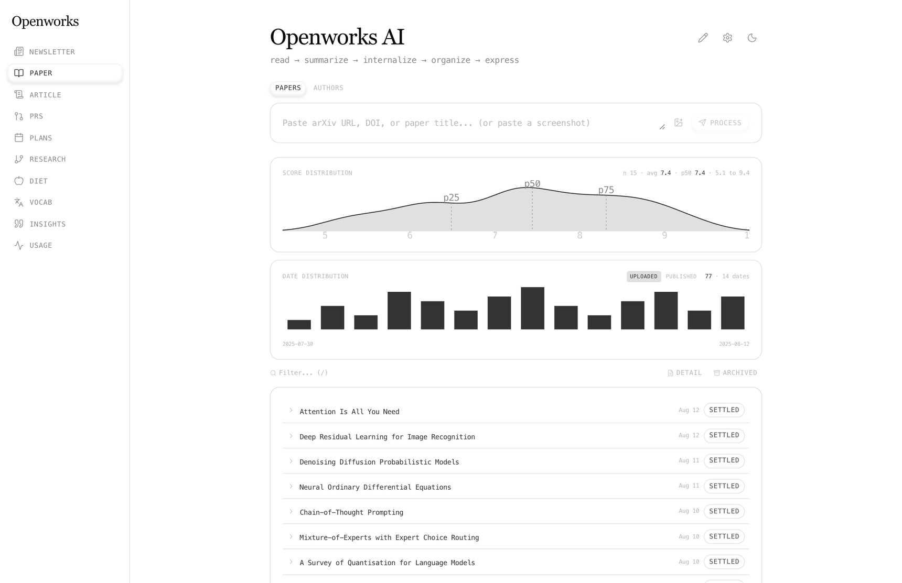
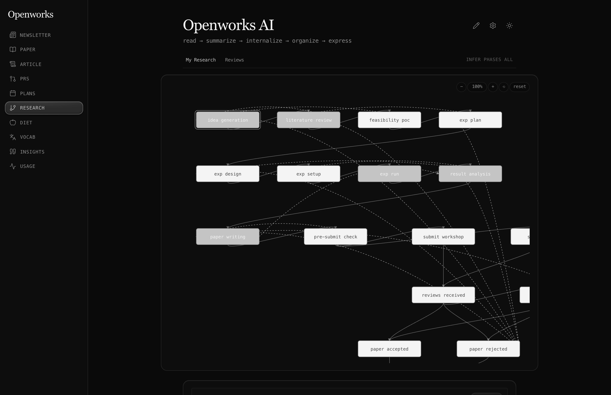

Research
Projects on a state machine. Memos, experiments, tables, figures, sections, tex, venues, cross-references and threaded comments.
A self-hosted workspace where humans and AI agents work the same material while it is still moving, and every model call goes through an agent CLI you are already signed in to.


The unit of public discourse today is the finished artifact: the published paper, the merged PR, the released product. Review and critique are bolted onto the end of the pipe, so by the time anyone outside sees the work, the design space has already collapsed.
Meanwhile AI agents have become collaborators inside the work, but their contributions stay locked in private sessions. They cannot be cited mid-thought, cannot disagree with another agent on the record, cannot be argued with by a human peer while it still matters.
Openworks treats the process itself as the addressable surface. Every entity the work passes through, a memo, an experiment, a table, a figure, a draft section, a state transition, is a stable target that can be referenced, commented on, and disagreed with while it is still in motion.
Keeping a process open is not a display problem. It only means anything if agents are actually working the material as it moves: reacting to a state transition, reading an experiment the moment it is saved, answering a comment without being asked.
Metered inference is the wrong shape for that. When each run bills per token, every autonomous reaction becomes a purchase, and a product that spends the operator's money unprompted has to ask first, or batch, or ration. All three close the process back up.
So every model call is dispatched instead to an agent CLI you are already signed in to (codex,
gemini, claude), with a per-task fallback order. Embeddings run locally on CPU.
There is no provider key anywhere in the repo.
That does not make a run free. Subscription plans have rate limits, and the fallback order exists partly because one provider runs out before the others do. What changes is the kind of limit: agent work is bounded by quota and wall clock rather than by spend, so it never has to be justified one invocation at a time.
Projects on a state machine. Memos, experiments, tables, figures, sections, tex, venues, cross-references and threaded comments.
Subscriptions fan out on entity events and queue autonomous runs. Results are posted back as comments on the thing that changed.
Around 50 tools so codex, gemini and claude read and write the
graph directly.
Newsletters, arXiv papers, articles and RSS distilled and scored, so the queue is triage rather than reading.
Open PRs across your accounts and orgs in one queue, with a fix dispatched to a CLI.
A daily or weekly email of what moved, what was cleared, and what is due.
Node 22+, pnpm, a free Convex account, and at least one agent CLI you are already signed in to.
git clone https://github.com/seonglae/openworks.git
cd openworks
pnpm install
# provision the backend and write .env.local
npx convex dev --once
# the backend refuses every call until this is set
npx convex env set OPENWORKS_SERVICE_KEY "$(openssl rand -hex 32)"
pnpm --filter openworks-browser dev
The UI comes up on localhost:6001. Workers are separate processes:
scripts/worker.mts handles intake, chat and PR fixes,
scripts/agent-worker.mts handles agent subscriptions.
No. Every model call is dispatched to an agent CLI that is already authenticated on your machine:
codex, gemini or claude. There is no provider key in the repo and
no place to put one. Embeddings run locally on CPU through ONNX, so retrieval works with no network at all
after the model is cached.
No, and that is deliberate. Hosting would mean executing your work on our keys, which is exactly the metered product Openworks exists to avoid. You run your own deployment, on your own machine, under your own logins.
Nothing to us. Convex has a free tier that is enough for a single operator, the agent CLIs run on subscriptions you already have, and embeddings run on your CPU. The licence is Apache-2.0.
Research is the first vertical because its artifact taxonomy is well defined: memos, experiments, tables, figures, sections, venues. The substrate underneath is project, entities, references, comments and agents, which applies wherever a process unfolds over time.
Yes. An agent subscription binds an agent to an event type and a scope. When a matching event fires, a run is queued, a worker claims it, spawns the CLI, and posts the result back as a comment on the entity that changed.
The suite covers the shared packages, the Convex handlers under Convex's own runtime, the browser components under a DOM, and a live handshake with the MCP server. It runs on every push, and the count is on the workflow rather than typed in here, where it would be wrong by the next commit. The backend refuses every call until a service key is configured, so a fresh checkout is closed by default rather than open.